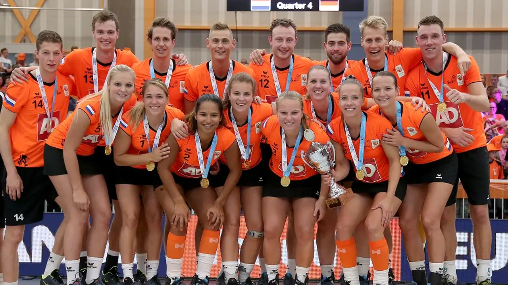
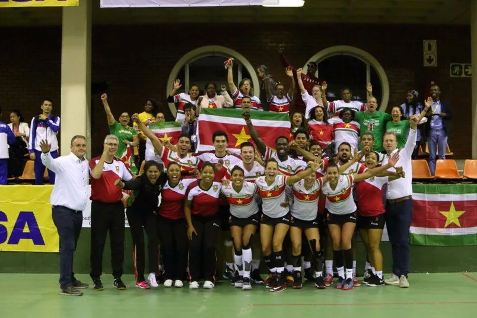

Korfbal in België, Nederland en Suriname
België
België telt ± 50 clubs en 7000 leden die aangesloten zijn bij de Koninklijke Belgische Korfbal Bond (KBKB). De meeste van deze clubs zijn gevestigd in de provincie Antwerpen, doch er zijn er ook in de Gentse regio en Vlaams-Brabant actief. België kent twee competities,een voor het zaalkorfbal en een voor het veldkorfbal. De hoogste klasse in de zaalvariant is de Topkorfbal League, in de veldvariant is dat de Eerste klasse A.
Eenmaal werd België wereldkampioen korfbal (in 1991), tijdens alle andere edities behaalden ze de zilveren medaille (1978, 1984, 1987, 1995, 1999, 2003, 2007, 2011, 2015 en 2019). Het Europees kampioenschap werd nog nooit gewonnen, wel behaalde België driemaal de zilveren medaille (1998, 2006 en 2010) en eenmaal de bronzen (2002). Twaalfmaal werd de Europa Cup in België georganiseerd, waarbij Antwerpen de absolute voorkeur genoot (1968, 1971, 1974, 1978, 1983, 1987, 1988, 1998, 2003, 2007). Daarnaast werd dit Europees kampioenenbal ook eenmaal in Ekeren (1981) en eenmaal in Herentals (2010) georganiseerd. Het Wereldkampioenschap ten slotte werd tweemaal georganiseerd te Antwerpen (1984 en 1991), deze eer is hen opnieuw te beurt gevallen (samen met Gent en Herentals) tijdens het WK 2015.

AKC uit Antwerpen slaagde er het vaakst in kampioen te worden. Ze werden achtmaal landskampioen in de zaal (1928, 1929, 1937, 1957, 1985 - 1988) en achttienmaal op het veld (1928, 1929, 1937, 1957, 1985 - 1988, 1998 - 2004, 2007 en 2008). Daarnaast wonnen ze elfmaal de Beker van België (1983, 1986, 1993, 1995, 1999, 2000 - 2004, 2015, 2016) en eenmaal de Europa Cup (1986). Royal Scaldis Sporting Club behaalde tienmaal de landstitel op het veld (1922 - 1927, 1930, 1965, 1991 en 2009) en viermaal in de zaal (1968 - 1970 en 2010) tevens behaalden ze de tweemaal de Beker van België (2012- 2013). Een andere grote club uit het korfbal is Kon. Riviera K.C. dat elfmaal landskampioen werd op het veld (1932 - 1935, 1973 - 1975, 1977, 2005 en 2010) en tweemaal zaalkampioen (2005 en 2006). Voort werden ze viermaal bekerkampioen (1988, 2005 - 2007) en wonnen ze eenmaal de Europa Cup (1977). Catbavrienden behaalde zesmaal de landstitel in het veldkampioenschap (1990, 1992, 1993, 1995, 1996 en 1997) binnen en zesmaal het zaalkampioenschap (1989, 1991, 1992, 1994, 1996 en 1997). Daarnaast wonnen ze vijfmaal de beker (1992, 1994 en 1996 - 1998), driemaal de Europa Cup (1992, 1997 en 1998) en waren ze drie keer verliezend finalist (1990, 1993 en 1995). Andere noemenswaardige teams zijn Meeuwen KV (11 keer veld en 2 keer beker), huidig zaal- en veldkampioen Boeckenberg KC (11× zaal, 6× veld en 6× beker) en KC Sikopi Leftbank Rabbits (4× zaal, 2× veld, 3× beker en eenmaal de Europa Cup '91).
Nederland
De Nederlandse korfbalverenigingen zijn vertegenwoordigd in het Koninklijk Nederlands Korfbalverbond (KNKV). Deze bond is ontstaan op 1 juli 1973 na een fusie tussen de NKB en de CKB. De NKB (Nederlandsche Korfbal Bond) is opgericht op 2 juni 1903 en kreeg op 16 mei 1938 het predicaat Koninklijk. De CKB (Christelijke Korfbal Bond) was de christelijke tegenhanger van deze bond en werd opgericht in 1919. Naast deze twee bonden was er ook nog een bond voor dameskorfbal, de Nederlandse Dames Korfbal Bond, opgericht in september 1947. Deze fuseerde met het KNKV in 1994. Er waren in Nederland anno 1989 zo'n 100.000 korfballers, verdeeld over ongeveer 515 verenigingen waarvan PKC/SWKGroep de grootste vereniging is met ruim 1000 leden.
Sinds 2005 kent de Nederlandse korfbalcompetitie de Korfbal League. Hierin spelen de 10 beste clubs in de Nederlandse zaalkorfbalcompetitie. De top 4 uit de eindrangschikking spelen in play-offs om een plaats in de zaalfinale die in het Rotterdamse Ahoy gespeeld wordt. Vanaf 2016 wordt de zaalfinale gespeeld in de Ziggo Dome te Amsterdam. Per 2020 wordt de zaalfinale weer in Ahoy gespeeld. De korfbal League is de hoogst haalbare competitie van Nederland. In deze competitie strijden 10 topploegen om een plaats in de zaalfinale.
Suriname
Korfbal werd rond 1910 in Suriname geïntroduceerd. De eerste sportbond was de Surinaamse Korfbal Bond. Na de jaren 1980 raakte de sport in de vergetelheid. In 2017 werd de Surinaamse Korfbal Federatie opgericht om de sport in Suriname nieuw leven in te blazen. Het Surinaams korfbalteam, bestaande uit Nederlanders van Surinaamse komaf, werd vierde tijdens het Wereldkampioenschap korfbal van 2019.
Internationaal korfbal
In 1933 is de International Korfball Federation (IKF) opgericht (oorspronkelijk Féderation Internationale de Korfbal), om internationaal korfbal te stimuleren. Bij de IKF zijn inmiddels 72 nationale federaties aangesloten. Er zijn in de wereld ongeveer 300.000 korfballers.
Overzicht Europese kampioenen
- 2021 - Nederland
- 2018 - Nederland
- 2016 - Nederland
- 2014 - Nederland
- 2010 - Nederland
- 2006 - Nederland
- 2002 - Nederland
- 1998 - Nederland
Overzicht wereldkampioenen
- 2019 - Nederland
- 2015 - Nederland
- 2011 - Nederland
- 2007 - Nederland
- 2003 - Nederland
- 1999 - Nederland
- 1995 - Nederland
- 1991 - België
- 1987 - Nederland
- 1984 - Nederland
- 1978 - Nederland
Olympische Spelen
Tijdens de Olympische Spelen van 1920 in Antwerpen en tijdens Olympische Spelen 1928 in Amsterdam was korfbal een demonstratiesport. Het stond niet op het officiële olympische programma, maar werd georganiseerd om de sport internationale bekendheid te geven. Sinds 1993 is de IKF officieel erkend door het IOC. Korfbal is echter geen olympische programmasport, maar neemt deel aan de World Games, dat de derde tak van het olympische gedachtegoed is. Momenteel wordt korfbal gespeeld in 61 landen. Eind 2007 moesten dit er minimaal 50 zijn om de olympische status te kunnen behouden.